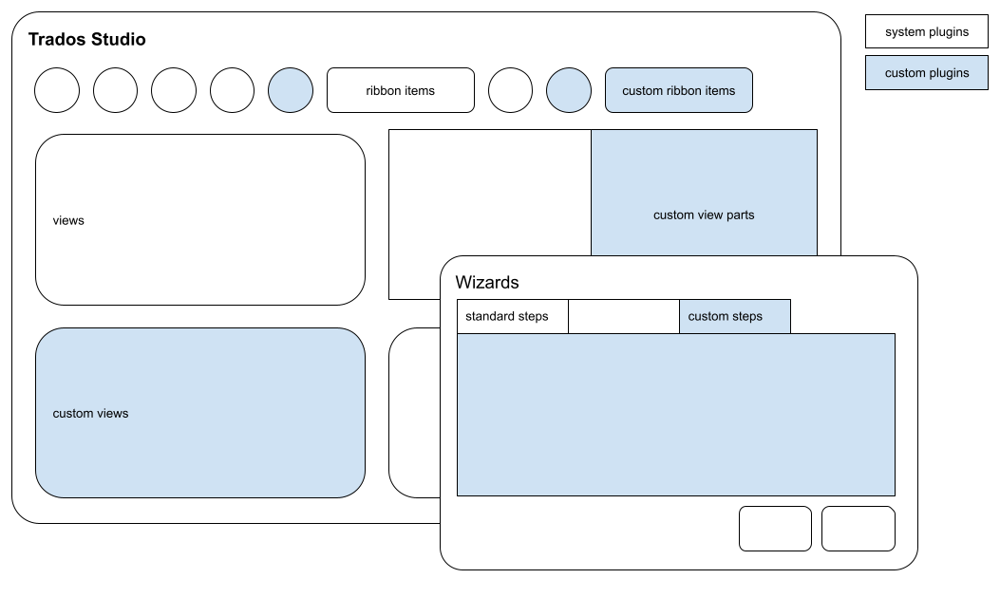

User Interface Integration
The Trados Studio Integration API allows third-party developers to extend and integrate custom UI functionalities into the Trados Studio application.
Required Assembly References
Add the following assemblies to your project. You can find them in the Trados Studio installation folder:

- Sdl.Desktop.IntegrationApi.dll
- Sdl.Desktop.IntegrationApi.Extensions.dll
- Sdl.TranslationStudioAutomation.IntegrationApi.dll
- Sdl.TranslationStudioAutomation.IntegrationApi.Extensions.dll
Important
Follow these guidelines when building and deploying plug-ins:
- Set your build output path to %AppData%\Trados\Trados Studio\19\Plugins\Packages\
- Verify that your library references point to the Trados Studio folder (for example, C:\Program Files\Trados\Trados Studio\Studio19)
- Sign your assembly with a strong name—unsigned assemblies will not load in Trados Studio
- See How to: Sign an Assembly with a Strong Name for details
For more information, see Building a plug-in and Plug-in deployment.
API Namespaces
Sdl.Desktop.IntegrationApi
Sdl.Desktop.IntegrationApi is the main namespace for integrating new UI functionalities into Studio.
Sdl.TranslationStudioAutomation.IntegrationApi
Sdl.TranslationStudioAutomation.IntegrationApi is the main namespace for integrating custom functionality into the Trados Studio application.